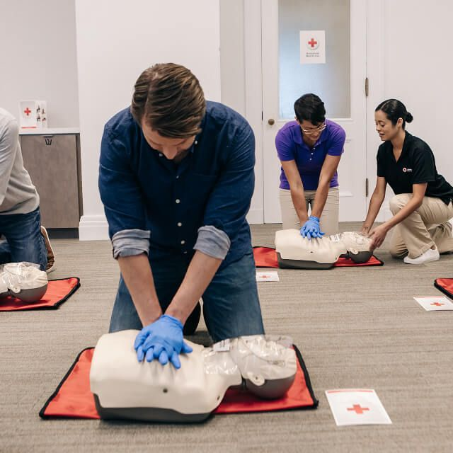

Why AidFirst Matters

Every Second Counts
In medical emergencies, the first few minutes are critical. Brain damage from lack of oxygen begins within 4-6 minutes of cardiac arrest. Having trained individuals nearby can dramatically improve survival rates.

Accessible Training
Traditional first aid courses can be expensive and time-consuming. Our platform makes essential knowledge available to anyone with an internet connection, breaking down barriers to life-saving education.